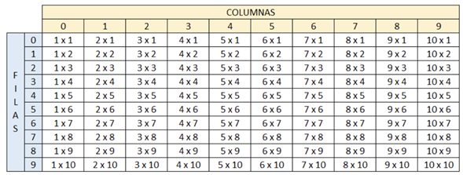

1. Organizar todos los puntos del taller de condicionales en modo funciones.
1.4 . La video tienda que presta sus servicios de alquiler de películas a los usuarios del barrio el Porvenir, requiere de una aplicación que permita registrar el alquiler de las películas que adquieren sus usuarios. Para cada usuario se debe permitir la opción de alquilar película, consultar películas disponibles y recibir película en la video tienda con la opción de realizar anotaciones sobre estas si se llegan a presentar daños u otra novedad sobre la película.
SubProceso pelicula <- alquilar
Definir pelicula Como Caracter;
Escribir "Que pelicula deseas alquilar?";
Leer pelicula;
FinSubProceso
SubProceso stock
Escribir "Actualmente tenemos en nuestro Stock disponible:";
Escribir "El viaje del chigüiro";
Escribir "Mi vecino Toreto";
Escribir "Ay caramba, Biografia de BJS";
FinSubProceso
SubProceso anotacion(nombrePelicula)
Definir decision Como Logico;
Escribir "Deseas realizar alguna anotacion de la pelicula: " , nombrePelicula;
Leer decision;
Si decision Entonces
Escribir "¿Que anotacion deseas realizar?";
SiNo
Escribir "Gracias que vuelvas pronto";
FinSi
FinSubProceso
Proceso sin_titulo
Definir opcion Como Entero;
Definir nombrePelicula Como Caracter;
Escribir "Bienvenido a la video tienda barrio el porvenir";
Escribir "¿Que deseas hacer el dia de hoy?";
Escribir "1. Alquilar pelicula";
Escribir "2. Consultar películas disponibles";
Escribir "3. Recibir película";
Leer opcion;
Segun opcion Hacer
1:
nombrePelicula <- alquilar();
2:
stock();
3:
Escribir "¿Que pelicula recibiras?";
Leer nombrePelicula;
anotacion(nombrePelicula);
De Otro Modo:
Escribir "Opcion elegida no existe";
FinSegun
FinProceso
1.5 . La Droguería Mi Salud presta sus servicios en la localidad de Suba y requiere una aplicación para poder facturar los productos que vende a sus clientes y para ello, los productos tienen unas características que deben indicársele al cliente para que pueda escoger el producto a comprar. Para cada cliente, se tienen las opciones de compra de producto, consulta de precios por producto y devoluciones en caso de que se presenten.
SubProceso devolucion
Escribir "¿Que producto deseas devolver?";
FinSubProceso
SubProceso adquirir
Definir nombreProducto Como Caracter;
Escribir "Que producto deseas adquirir?";
Leer nombreProducto;
FinSubProceso
SubProceso opcion <- listarProductos
Definir opcion Como Entero;
Escribir "¿Que producto deseas verificar el precio?";
Escribir "1. Vitamina C";
Escribir "2. Pastillas antimareo";
Escribir "3. Protector Solar";
Leer opcion;
FinSubProceso
SubProceso consultarValor(producto)
Segun producto Hacer
1:
Escribir "El valor de la Vitamina C es de 1000 pesos";
2:
Escribir "El valor de la Pastillas Antimareo es de 1500 pesos";
3:
Escribir "El valor de la Protector Solar es de 10000 pesos";
FinSegun
FinSubProceso
Proceso sin_titulo
Definir opcion Como Entero;
Definir opcionProducto Como Entero;
Escribir "Bienvenido a la Drogueria Mi Salud de la localidad Suba";
Escribir "";
Escribir "¿Que deseas hacer el dia de hoy?";
Escribir "1. Comprar producto";
Escribir "2. Consultar precio por producto";
Escribir "3. Devolucion de productos";
Leer opcion;
Segun opcion Hacer
1:
adquirir();
2:
consultarValor(listarProductos());
3:
devolucion();
De Otro Modo:
Escribir "Opcion elegida no existe";
FinSegun
FinProceso
1.6 . El taller de motos "El Maquinista" recibe motocicletas de alto cilindraje para realizar las respectivas revisiones y requiere una aplicación que le permita registrar los servicios generados a sus clientes. Para cada motocicleta se debe tener registro del ingreso al taller y las observaciones por parte del cliente. También debe existir registro de salida del taller con las novedades y otra de arreglos hechos por el mecánico en caso de que se requiera inventariar cambios repuestos en la motocicleta al entregarla.
SubProceso ingreso
Definir decision Como Logico;
Definir observacion Como Caracter;
Escribir "Haz registrado ingreso al taller, ¿deseas agregar alguna observacion?";
Leer decision;
Si decision Entonces
Escribir "Por favor ingresa la observacion";
Leer observacion;
SiNo
Escribir "El ingreso no tendra ninguna observacion, gracias";
FinSi
FinSubProceso
SubProceso salida
Definir decision Como Logico;
Definir novedad Como Caracter;
Escribir "Haz registrado salida del taller, ¿deseas agregar alguna novedad?";
Leer decision;
Si decision Entonces
Escribir "Por favor ingresa la novedad";
Leer novedad;
SiNo
Escribir "La salida se realizara sin novedades";
FinSi
FinSubProceso
SubProceso procedimientos
Escribir "Haz seleccionado registro de procedimientos, por favor acontinuacion indica que procesos se realizaron en la moto";
FinSubProceso
Proceso sin_titulo
Definir opcion Como Entero;
Escribir "Bienvenido al Maquinista";
Escribir "";
Escribir "¿Que deseas hacer el dia de hoy?";
Escribir "1. Registrar ingreso";
Escribir "2. Registrar Salida";
Escribir "3. Registrar procedimientos";
Leer opcion;
Segun opcion Hacer
1:
ingreso();
2:
salida();
3:
procedimientos();
De Otro Modo:
Escribir "Opcion elegida no existe";
FinSegun
FinProceso
1.7 . La Secretaría de Salud Municipal requiere de una aplicación que le permita calcular el IMC (Índice de masa corporal) y requiere los datos peso en kilogramos y estatura en metros Para cada persona encuestada adicional a los datos suministrados, debe mostrar el resultado para cada uno y establecer en qué rango se encuentra (bajo peso, normal, sobrepeso y obeso).
SubProceso interpretacion (IMC)
Si IMC < 18.5 Entonces
Escribir "Actualmente tienes bajo peso";
SiNo
Si IMC <= 24.9 Entonces
Escribir "Actualmente tu peso es normal";
SiNo
Si IMC <= 29.9 Entonces
Escribir "Actualmente tienes sobre peso";
SiNo
Escribir "Actualmente tienes obesidad";
FinSi
FinSi
FinSi
FinSubProceso
SubProceso IMC <- caulcularIMC (altura, peso)
Definir IMC Como Real;
IMC <- peso / (altura * altura);
Escribir "IMC es: ", IMC;
FinSubProceso
Proceso sin_titulo
Definir peso Como Real;
Definir altura Como Real;
Definir IMC Como Real;
Escribir "Por favor ingresa tu peso en kilos";
leer peso;
Escribir "Por favor ingresa tu altura en metros";
leer altura;
IMC <- caulcularIMC(altura,peso);
interpretacion(IMC);
FinProceso
1.8 . El pastelero Don Carlos es el mejor pastelero de la ciudad y requiere una aplicación que le permita registrar los pedidos de los clientes en cuanto a las tortas que realiza. Cada torta tiene unas características propias como sabor, cantidad (porciones) y decoraciones. Se requiere que la aplicación permita registrar los pedidos, las tortas disponibles y las ventas que se registren diariamente.
SubProceso pedido
Definir sabor Como Caracter;
Definir porciones Como Entero;
Definir decoraciones Como Caracter;
Definir decision Como Logico;
Escribir "Por favor indicanos las caracteristicas de la torta que deseas llevarte";
Escribir "Indica el sabor de la torta";
Leer sabor;
Escribir "indica la catidad de porciones";
Leer porciones;
Escribir "Indica que decoraciones posee la torta";
Leer decoraciones;
Escribir "Tu pedido es: una torta con sabor a ", sabor, " Con la cantidad de porciones de ", porciones , " y decorado con: ", decoraciones;
Escribir "¿Es correcto tu pedido?";
Leer decision;
Si decision Entonces
Escribir "Pedido captado con exito";
SiNo
Escribir "Pedido rechazado por favor reinicia el menu";
FinSi
FinSubProceso
SubProceso stock
Escribir "Las tortas que hay en Stock son:";
Escribir "Torta Gloton: Sabor: Chocolate Porciones: 12 Decoracion Una dona glaseada encima";
Escribir "Torta Friki: Sabor: Vainilla Porciones: 6 Decoracion Chips con forma de bits";
Escribir "Torta Enamorado: Sabor: chocolate + Fresa Porciones: 12 Decoracion Un corazon de chocolate";
FinSubProceso
SubProceso ventas
Escribir "Actualmente no se ha vendido nada porque somos una pasteleria ficticia";
FinSubProceso
Proceso sin_titulo
Definir opcion Como Entero;
Escribir "Bienvenido a la pasteleria de Don Carlos el mejor de la ciudad";
Escribir "";
Escribir "¿Que deseas hacer el dia de hoy?";
Escribir "1. Registrar pedido";
Escribir "2. Ver tortas disponibles";
Escribir "3. Revisar ventas diarias";
Leer opcion;
Segun opcion Hacer
1:
pedido();
2:
stock();
3:
ventas();
De Otro Modo:
Escribir "Opcion elegida no existe";
FinSegun
FinProceso
1.9 . El profesor de geometría está explicando a sus estudiantes las fórmulas para calcular el área de diferentes figuras geométricas, para ello requiere una aplicación que le facilite el ejercicio solicitándole los valores al estudiante. La aplicación debe permitir que el estudiante seleccione si desea calcular el área de un rectángulo, triángulo o trapecio. No olvide solicitar los datos necesarios para realizar cada cálculo y mostrar su respectivo resultado.
SubProceso resultado <- rectangulo
Definir resultado Como Real;
Definir base Como Real;
Definir altura Como Real;
Escribir "por favor ingresa la base del rectangulo";
Leer base;
Escribir "Por favor ingresa la altura del rectangulo";
Leer altura;
resultado <- base * altura;
FinSubProceso
SubProceso resultado <- triangulo
Definir resultado Como Real;
Definir base Como Real;
Definir altura Como Real;
Escribir "por favor ingresa la base del triangulo";
Leer base;
Escribir "Por favor ingresa la altura del triangulo";
Leer altura;
resultado <- (base * altura)/2;
FinSubProceso
SubProceso resultado <- trapecio
Definir resultado Como Real;
Definir base Como Real;
Definir altura Como Real;
Definir baseMenor Como Real;
Escribir "por favor ingresa la base mayor (inferior) del trapecio";
Leer base;
Escribir "por favor ingresa la base menor (superior) del trapecio";
Leer baseMenor;
Escribir "Por favor ingresa la altura del trapecio";
Leer altura;
resultado <- (base * baseMenor)/2 * altura;
FinSubProceso
Proceso sin_titulo
Definir opcion Como Entero;
Definir resultado Como Real;
Escribir "Calculo con Hugo";
Escribir "";
Escribir "¿Que area deseas calcular?";
Escribir "1. Rectángulo";
Escribir "2. Triángulo ";
Escribir "3. Trapecio";
Leer opcion;
resultado <- 0;
Segun opcion Hacer
1:
resultado <- rectangulo();
2:
resultado <- triangulo();
3:
resultado <- trapecio();
De Otro Modo:
Escribir "Opcion elegida no existe";
FinSegun
Escribir "El area resultante es: " , resultado;
FinProceso
1.10 . El banco "Su banco fiel" es un banco que inicia sus actividades financieras y necesita una aplicación para llevar las cuentas de sus usuarios; por lo tanto, se sugiere que la cuenta tenga los atributos titular y cantidad. Para cada cliente las cuentas permitirán realizar ingresos, retiros o consultas de valor. En los ingresos no se pueden insertar valores negativos y para los retiros el valor no puede ser mayor al valor que tiene en la cuenta.
SubProceso nuevaCantidad <- ingreso (cantidad)
Definir nuevaCantidad Como Entero;
Definir dinero Como Entero;
Escribir "Por favor ingresa el valor que deseas ingresar";
Leer dinero;
Si dinero > 0 Entonces
nuevaCantidad <- cantidad + dinero;
Escribir "Ingreso finalizado con exito, nuevo saldo: ", nuevaCantidad;
SiNo
Escribir "Por favor ingresa un valor superior a 0 para esta operacion";
FinSi
FinSubProceso
SubProceso nuevaCantidad <- retiro (cantidad)
Definir nuevaCantidad Como Entero;
Definir dinero Como Entero;
Escribir "por favor ingresa el valor que deseas retirar";
Leer dinero;
Si dinero <= cantidad Entonces
nuevaCantidad <- cantidad - dinero;
Escribir "retiro finalizado con exito, nuevo saldo: ", nuevaCantidad;
SiNo
Escribir "No puedes retirar valores superiores a tu saldo actual";
FinSi
FinSubProceso
Proceso sin_titulo
Definir opcion Como Entero;
Definir titular Como Caracter;
Definir cantidad Como Entero;
Definir login Como Caracter;
titular <- "Johan";
cantidad <- 10000;
Escribir "Por favor ingresa el nombre del titular";
Leer login;
Si login = titular Entonces
Escribir "Bienvenido " , titular ," ¿Que deseas hacer el dia de hoy?";
Escribir "1. Realizar un ingreso";
Escribir "2. Realizar un retiro";
Escribir "3. Cosultar valor";
Leer opcion;
Segun opcion Hacer
1:
cantidad <- ingreso(cantidad);
2:
cantidad <- retiro(cantidad);
3:
Escribir "Actualmente en la cuenta hay un valor de: ", cantidad;
De Otro Modo:
Escribir "Opcion elegida no existe";
FinSegun
SiNo
Escribir "El usuario buscado no esta en el sistema";
FinSi
FinProceso
2. Organizar los puntos 6, 7 y 8 del taller de ciclos en modo funciones.
2.6 . Se está creando una aplicación que va a estar conectada con un prototipo que permita almacenar contactos telefónicos en el dispositivo. Para ello cada contacto debe contener nombre completo, teléfono y organización. Se requiere que la aplicación permita añadir 3 contactos verificando que el número no esté almacenado, buscar contactos almacenados y eliminar contactos si el usuario lo requiere. Recuerde que el sistema debe terminar cuando el usuario así lo indique.
SubProceso repetido <- verificarDuplicidad (telefonoDummy,telefono1,contacto1,telefono2,contacto2,telefono3,contacto3)
Definir repetido Como Logico;
repetido <- Falso;
Si contacto1 Entonces
Si telefono1 = telefonoDummy Entonces
Escribir "Ya hay un contacto con ese numero";
repetido <- Verdadero;
FinSi
FinSi
Si contacto2 Entonces
Si telefono2 = telefonoDummy Entonces
Escribir "Ya hay un contacto con ese numero";
repetido <- Verdadero;
FinSi
FinSi
Si contacto3 Entonces
Si telefono3 = telefonoDummy Entonces
Escribir "Ya hay un contacto con ese numero";
repetido <- Verdadero;
FinSi
FinSi
FinSubProceso
Subproceso imprimirContacto(nombre, telefono, organizacion)
Escribir "Nombre: ", nombre, " Telefono: ", telefono, " Organizacion: " , organizacion;
FinSubProceso
Proceso sin_titulo
Definir nombreCompleto1 Como Caracter;
Definir telefono1 Como Caracter;
Definir organizacion1 Como Caracter;
Definir contacto1 Como Logico;
Definir nombreCompleto2 Como Caracter;
Definir telefono2 Como Caracter;
Definir organizacion2 Como Caracter;
Definir contacto2 Como Logico;
Definir nombreCompleto3 Como Caracter;
Definir telefono3 Como Caracter;
Definir organizacion3 Como Caracter;
Definir contacto3 Como Logico;
Definir nombreDummy Como Caracter;
Definir telefonoDummy Como Caracter;
Definir organizacionDummy Como Caracter;
Definir control Como Logico;
Definir repetido Como Logico;
Definir memoria Como Entero;
Definir opcion Como Entero;
contacto1 <- Falso;
contacto2 <- Falso;
contacto3 <- Falso;
telefono1 <- "";
telefono2 <- "";
telefono3 <- "";
memoria <- 0;
control <- Verdadero;
Mientras control = Verdadero Hacer
Escribir "¿Que deseas hacer ahora?";
Escribir "1. Guardar contacto";
Escribir "2. Buscar contacto";
Escribir "3. Eliminar contacto";
Escribir "4. Salir";
Leer opcion;
Segun opcion Hacer
1:
Si memoria < 3 Entonces
Escribir "Ingresa el telefono del contacto";
Leer telefonoDummy;
repetido <- verificarDuplicidad(telefonoDummy,telefono1,contacto1,telefono2,contacto2,telefono3,contacto3);
Si repetido = falso Entonces
Escribir "Ingresa el nombre del contacto";
Leer nombreDummy;
Escribir "Ingresa la organizacion del contacto";
Leer organizacionDummy;
Si contacto1 = Falso Entonces
nombreCompleto1 <- nombreDummy;
telefono1 <- telefonoDummy;
organizacion1 <- organizacionDummy;
contacto1 <- Verdadero;
memoria <- memoria + 1;
SiNo
Si contacto2 = Falso Entonces
nombreCompleto2 <- nombreDummy;
telefono2 <- telefonoDummy;
organizacion2 <- organizacionDummy;
contacto2 <- Verdadero;
memoria <- memoria + 1;
SiNo
nombreCompleto3 <- nombreDummy;
telefono3 <- telefonoDummy;
organizacion3 <- organizacionDummy;
contacto3 <- Verdadero;
memoria <- memoria + 1;
FinSi
FinSi
FinSi
Escribir "Contacto creado con exito: ";
imprimirContacto(nombreDummy,telefonoDummy,organizacionDummy);
SiNo
Escribir "No hay suficiente memoria";
FinSi
2:
Escribir "Ingresa el nombre del contacto que deseas buscar";
Leer nombreDummy;
repetido <- falso;
Si contacto1 Entonces
Si nombreCompleto1 = nombreDummy Entonces
telefonoDummy <- telefono1;
organizacionDummy <- organizacion1;
repetido <- Verdadero;
FinSi
FinSi
Si contacto2 Entonces
Si nombreCompleto2 = nombreDummy Entonces
telefonoDummy <- telefono2;
organizacionDummy <- organizacion2;
repetido <- Verdadero;
FinSi
FinSi
Si contacto3 Entonces
Si nombreCompleto3 = nombreDummy Entonces
telefonoDummy <- telefono3;
organizacionDummy <- organizacion3;
repetido <- Verdadero;
FinSi
FinSi
Si repetido Entonces
Escribir "Contacto encontrado:";
imprimirContacto(nombreDummy,telefonoDummy,organizacionDummy);
SiNo
Escribir "No existe un contacto con el nombre: ",nombreDummy;
FinSi
3:
Escribir "Ingresa el nombre del contacto que deseas eliminar";
Leer nombreDummy;
repetido <- falso;
Si contacto1 Entonces
Si nombreCompleto1 = nombreDummy Entonces
contacto1 <- Falso;
memoria <- memoria - 1;
repetido <- Verdadero;
FinSi
FinSi
Si contacto2 Entonces
Si nombreCompleto2 = nombreDummy Entonces
contacto2 <- Falso;
memoria <- memoria - 1;
repetido <- Verdadero;
FinSi
FinSi
Si contacto3 Entonces
Si nombreCompleto3 = nombreDummy Entonces
contacto3 <- Falso;
memoria <- memoria - 1;
repetido <- Verdadero;
FinSi
FinSi
Si repetido Entonces
Escribir "Contacto eliminado con exito";
SiNo
Escribir "No hay ningun contacto con ese nombre";
FinSi
4:
control <- Falso;
De Otro Modo:
Escribir "Opcion elegida no existe";
FinSegun
FinMientras
FinProceso
2.7 . El parqueadero "El guardián" presta sus servicios de parqueadero nocturno para los usuarios del barrio y requiere una aplicación que permita registrar los vehículos que se cuidan en estas instalaciones. Se sugiere que el parqueadero tenga los atributos del vehículo como son, placa y marca, y los datos del cliente como son nombre completo y número de teléfono. Para cada vehículo se debe permitir la opción de ingresar al parqueadero, retirar del parqueadero y consultar si un vehículo se encuentra en el parqueadero. Recuerde que el sistema debe terminar cuando el usuario así lo indique. Tenga en presente que el parqueadero solo puede almacenar máximo 5 vehículos.
SubProceso imprimirCarro (placa,marca,nombre,telefono)
Escribir "Placa: ", placa;
Escribir "Marca: ", marca;
Escribir "Nombre del dueño: ", nombre;
Escribir "Telefono del dueño: ", telefono;
FinSubProceso
Proceso sin_titulo
Definir placa1 Como Caracter;
Definir marca1 Como Caracter;
Definir nombreCompleto1 Como Caracter;
Definir telefono1 Como Caracter;
Definir slot1 Como Logico;
Definir placa2 Como Caracter;
Definir marca2 Como Caracter;
Definir nombreCompleto2 Como Caracter;
Definir telefono2 Como Caracter;
Definir slot2 Como Logico;
Definir placa3 Como Caracter;
Definir marca3 Como Caracter;
Definir nombreCompleto3 Como Caracter;
Definir telefono3 Como Caracter;
Definir slot3 Como Logico;
Definir placa4 Como Caracter;
Definir marca4 Como Caracter;
Definir nombreCompleto4 Como Caracter;
Definir telefono4 Como Caracter;
Definir slot4 Como Logico;
Definir placa5 Como Caracter;
Definir marca5 Como Caracter;
Definir nombreCompleto5 Como Caracter;
Definir telefono5 Como Caracter;
Definir slot5 Como Logico;
Definir placaDummy Como Caracter;
Definir marcaDummy Como Caracter;
Definir nombreCompletoDummy Como Caracter;
Definir telefonoDummy Como Caracter;
Definir control Como Logico;
Definir repetido Como Logico;
Definir espacio Como Entero;
Definir opcion Como Entero;
slot1 <- Falso;
slot2 <- Falso;
slot3 <- Falso;
slot4 <- Falso;
slot5 <- Falso;
espacio <- 0;
control <- Verdadero;
Mientras control Hacer
Escribir "¿Que deseas hacer ahora?";
Escribir "1. Ingresar al parqueadero";
Escribir "2. Retirar del parqueadero";
Escribir "3. Consultar Vehiculo";
Escribir "4. Salir";
Leer opcion;
Segun opcion Hacer
1:
Si espacio < 5 Entonces
Escribir "Ingresa la placa del vehiculo";
Leer placaDummy;
Escribir "Ingresa la marca del vehiculo";
Leer marcaDummy;
Escribir "Ingresa el nombre completo del dueño";
Leer nombreCompletoDummy;
Escribir "Ingresa el telefono del dueño";
Leer telefonoDummy;
Si slot1 = Falso Entonces
placa1 <- placaDummy;
marca1 <- marcaDummy;
nombreCompleto1<- nombreCompletoDummy;
telefono1 <- telefonoDummy;
slot1 <- Verdadero;
espacio <- espacio + 1;
SiNo
Si slot2 = Falso Entonces
placa2 <- placaDummy;
marca2 <- marcaDummy;
nombreCompleto2<- nombreCompletoDummy;
telefono2 <- telefonoDummy;
slot2 <- Verdadero;
espacio <- espacio + 1;
SiNo
Si slot3 = Falso Entonces
placa3 <- placaDummy;
marca3 <- marcaDummy;
nombreCompleto3 <- nombreCompletoDummy;
telefono3 <- telefonoDummy;
slot3 <- Verdadero;
espacio <- espacio + 1;
SiNo
Si slot4 = Falso Entonces
placa4 <- placaDummy;
marca4 <- marcaDummy;
nombreCompleto4 <- nombreCompletoDummy;
telefono4 <- telefonoDummy;
slot4 <- Verdadero;
espacio <- espacio + 1;
SiNo
placa5 <- placaDummy;
marca5 <- marcaDummy;
nombreCompleto5 <- nombreCompletoDummy;
telefono5 <- telefonoDummy;
slot5 <- Verdadero;
espacio <- espacio + 1;
FinSi
FinSi
FinSi
FinSi
Escribir "El vehiculo se ha guardado con exito";
imprimirCarro(placaDummy,marcaDummy,nombreCompletoDummy,telefonoDummy);
SiNo
Escribir "El parqueadero esta lleno";
FinSi
2:
repetido <- Falso;
Escribir "Ingresa la placa del vehiculo que deseas retirar";
Leer placaDummy;
Si slot1 Entonces
Si placaDummy = placa1 Entonces
slot1 <- Falso;
espacio <- espacio - 1;
repetido <- Verdadero;
FinSi
FinSi
Si slot2 Entonces
Si placaDummy = placa2 Entonces
slot2 <- Falso;
espacio <- espacio - 1;
repetido <- Verdadero;
FinSi
FinSi
Si slot3 Entonces
Si placaDummy = placa3 Entonces
slot3 <- Falso;
espacio <- espacio - 1;
repetido <- Verdadero;
FinSi
FinSi
Si slot4 Entonces
Si placaDummy = placa4 Entonces
slot4 <- Falso;
espacio <- espacio - 1;
repetido <- Verdadero;
FinSi
FinSi
Si slot5 Entonces
Si placaDummy = placa5 Entonces
slot5 <- Falso;
espacio <- espacio - 1;
repetido <- Verdadero;
FinSi
FinSi
Si repetido Entonces
Escribir "Vehiculo retirado con exito";
SiNo
Escribir "No existe ningun vehiculo con esa placa en el parqueadero";
FinSi
3:
repetido <- Falso;
Escribir "Ingresa la placa del vehiculo que deseas consultar";
Leer placaDummy;
Si slot1 Entonces
Si placaDummy = placa1 Entonces
marcaDummy <- marca1;
nombreCompletoDummy <- nombreCompleto1;
telefonoDummy <- telefono1;
repetido <- Verdadero;
FinSi
FinSi
Si slot2 Entonces
Si placaDummy = placa2 Entonces
marcaDummy <- marca2;
nombreCompletoDummy <- nombreCompleto2;
telefonoDummy <- telefono2;
repetido <- Verdadero;
FinSi
FinSi
Si slot3 Entonces
Si placaDummy = placa3 Entonces
marcaDummy <- marca3;
nombreCompletoDummy <- nombreCompleto3;
telefonoDummy <- telefono3;
repetido <- Verdadero;
FinSi
FinSi
Si slot4 Entonces
Si placaDummy = placa4 Entonces
marcaDummy <- marca4;
nombreCompletoDummy <- nombreCompleto4;
telefonoDummy <- telefono4;
repetido <- Verdadero;
FinSi
FinSi
Si slot5 Entonces
Si placaDummy = placa5 Entonces
marcaDummy <- marca5;
nombreCompletoDummy <- nombreCompleto5;
telefonoDummy <- telefono5;
repetido <- Verdadero;
FinSi
FinSi
Si repetido Entonces
Escribir "El vehiculo se encuentra en el parqueadero";
imprimirCarro(placaDummy,marcaDummy,nombreCompletoDummy,telefonoDummy);
SiNo
Escribir "Vehiculo no encontrado en el sistema";
FinSi
4:
control <- Falso;
FinSegun
FinMientras
FinProceso
2.8 . La escuela automovilística "El Maestro" requiere una aplicación que permita registrar a sus clientes en los cursos de enseñanza automovilística y establecer quienes lo han aprobado para continuar con el trámite de adquirir la licencia de conducción. Para cada usuario se debe permitir registrar su ingreso al curso, consultar usuarios que hayan presentado el curso y resultados de la prueba del curso (si fueron aprobados o no). Recuerde que el sistema debe terminar cuando el usuario así lo indique. Tenga presente que la escuela tiene capacidad máxima de gestionar 8 usuarios en su totalidad.
SubProceso imprimirUsuario (nombre,resultado)
Escribir "El usuario: ", nombre, " Actualmente se encuentra: ", resultado;
FinSubProceso
Proceso sin_titulo
Definir nombreUsuario1 Como Caracter;
Definir resultados1 Como Caracter;
Definir ingreso1 Como Logico;
Definir nombreUsuario2 Como Caracter;
Definir resultados2 Como Caracter;
Definir ingreso2 Como Logico;
Definir nombreUsuario3 Como Caracter;
Definir resultados3 Como Caracter;
Definir ingreso3 Como Logico;
Definir nombreUsuario4 Como Caracter;
Definir resultados4 Como Caracter;
Definir ingreso4 Como Logico;
Definir nombreUsuario5 Como Caracter;
Definir resultados5 Como Caracter;
Definir ingreso5 Como Logico;
Definir nombreUsuario6 Como Caracter;
Definir resultados6 Como Caracter;
Definir ingreso6 Como Logico;
Definir nombreUsuario7 Como Caracter;
Definir resultados7 Como Caracter;
Definir ingreso7 Como Logico;
Definir nombreUsuario8 Como Caracter;
Definir resultados8 Como Caracter;
Definir ingreso8 Como Logico;
Definir nombreUsuarioDummy Como Caracter;
Definir resultadosDummy Como Caracter;
Definir control Como Logico;
Definir repetido Como Logico;
Definir cupo Como Entero;
Definir opcion Como Entero;
ingreso1 <- Falso;
ingreso2 <- Falso;
ingreso3 <- Falso;
ingreso4 <- Falso;
ingreso5 <- Falso;
ingreso6 <- Falso;
ingreso7 <- Falso;
ingreso8 <- Falso;
cupo <- 0;
control <- Verdadero;
Mientras control Hacer
Escribir "¿Que deseas hacer ahora?";
Escribir "1. Ingresar usuario";
Escribir "2. Listar usuarios";
Escribir "3. Salir";
Leer opcion;
Segun opcion Hacer
1:
Si cupo < 8 Entonces
Escribir "Ingresa el nombre del usuario";
Leer nombreUsuarioDummy;
Escribir "Ingresa los resultados del usuario";
Leer resultadosDummy;
Si ingreso1 = Falso Entonces
nombreUsuario1 <- nombreUsuarioDummy;
resultados1 <- resultadosDummy;
ingreso1 <- Verdadero;
cupo <- cupo +1;
SiNo
Si ingreso2 = Falso Entonces
nombreUsuario2 <- nombreUsuarioDummy;
resultados2 <- resultadosDummy;
ingreso2 <- Verdadero;
cupo <- cupo +1;
SiNo
Si ingreso3 = Falso Entonces
nombreUsuario3 <- nombreUsuarioDummy;
resultados3 <- resultadosDummy;
ingreso3 <- Verdadero;
cupo <- cupo +1;
SiNo
Si ingreso4 = Falso Entonces
nombreUsuario4 <- nombreUsuarioDummy;
resultados4 <- resultadosDummy;
ingreso4 <- Verdadero;
cupo <- cupo +1;
SiNo
Si ingreso5 = Falso Entonces
nombreUsuario5 <- nombreUsuarioDummy;
resultados5 <- resultadosDummy;
ingreso5 <- Verdadero;
cupo <- cupo +1;
SiNo
Si ingreso6 = Falso Entonces
nombreUsuario6 <- nombreUsuarioDummy;
resultados6 <- resultadosDummy;
ingreso6 <- Verdadero;
cupo <- cupo +1;
SiNo
Si ingreso7 = Falso Entonces
nombreUsuario7 <- nombreUsuarioDummy;
resultados7 <- resultadosDummy;
ingreso7 <- Verdadero;
cupo <- cupo +1;
SiNo
nombreUsuario8 <- nombreUsuarioDummy;
resultados8 <- resultadosDummy;
ingreso8 <- Verdadero;
cupo <- cupo +1;
FinSi
FinSi
FinSi
FinSi
FinSi
FinSi
FinSi
Escribir "Usuario agregado con exito:";
imprimirUsuario(nombreUsuarioDummy,resultadosDummy);
SiNo
Escribir "Ya el curso esta lleno";
FinSi
2:
Si ingreso1 O ingreso2 O ingreso3 O ingreso4 O ingreso5 O ingreso6 O ingreso7 O ingreso8 Entonces
Escribir "Usuarios inscritos en el programa:";
SiNo
Escribir "No hay usuarios en el sistema";
FinSi
si ingreso1 Entonces
imprimirUsuario(nombreUsuario1,resultados1);
FinSi
si ingreso2 Entonces
imprimirUsuario(nombreUsuario2,resultados2);
FinSi
si ingreso3 Entonces
imprimirUsuario(nombreUsuario3,resultados3);
FinSi
si ingreso4 Entonces
imprimirUsuario(nombreUsuario4,resultados4);
FinSi
si ingreso5 Entonces
imprimirUsuario(nombreUsuario5,resultados5);
FinSi
si ingreso6 Entonces
imprimirUsuario(nombreUsuario6,resultados6);
FinSi
si ingreso7 Entonces
imprimirUsuario(nombreUsuario7,resultados7);
FinSi
si ingreso8 Entonces
imprimirUsuario(nombreUsuario8,resultados8);
FinSi
3:
control <- Falso;
FinSegun
FinMientras
FinProceso
3. Organizar todos los puntos del taller de arreglos en modo funciones.
3.1 . Crear un vector de tipo Entero con 5 posiciones, llenarlo con información solicitada al usuario. Después de recoger toda la información, se requiere imprimir el índice de cada posición en el arreglo con su valor de la siguiente manera:
• [0] = 55
• [1] = 99
• [2] = 11
• [3] = 56
• [4] = 69
SubProceso imprimirArreglo (inicio,final,data)
Definir indice Como Entero;
Para indice <- inicio Hasta final Con Paso 1 Hacer
Escribir "[",indice,"] = ", data[indice];
FinPara
FinSubProceso
Proceso sin_titulo
Definir data Como Entero;
Definir indice Como Entero;
Definir dummy Como Entero;
Dimension data[5];
Escribir "Por favor ingresa los numeros del arreglo";
Para indice <- 0 Hasta 4 Con Paso 1 Hacer
Leer dummy;
data[indice] <- dummy;
FinPara
imprimirArreglo(0,4,data);
FinProceso
3.2 . Crear un arreglo de números enteros de 20 posiciones, el cual, debe ser llenado con números aleatorios entre 1 y 100; después de haber llenado dicho arreglo, se debe volver a recorrer utilizando un ciclo diferente al que se usó para llenarse e imprimir los números pares e impares. Ejemplo
Números pares: 2, 4, 6, 8, 10
Números impares: 1, 3, 5, 7, 9
SubProceso imprimirTipo (tipo,data,inicio,final)
Definir indice Como Entero;
Para indice <- inicio Hasta final Con Paso 1 Hacer
Si tipo = "par" Entonces
Si data[indice] MOD 2 = 0 Entonces
Escribir data[indice], ", " Sin Saltar;
FinSi
SiNo
Si data[indice] MOD 2 <> 0 Entonces
Escribir data[indice], ", " Sin Saltar;
FinSi
FinSi
FinPara
Escribir "";
FinSubProceso
Proceso sin_titulo
Definir data Como Entero;
Definir indice Como Entero;
Definir dummy Como Entero;
Dimension data[20];
Para indice <- 0 Hasta 19 Con Paso 1 Hacer
data[indice] <- Aleatorio(1,100);
FinPara
Escribir "Números pares: " Sin Saltar;
imprimirTipo("par", data,0,19);
Escribir "Números impares: " Sin Saltar;
imprimirTipo("impar", data,0,19);
FinProceso
3.3 . Imprimir los números primos del 1 al 1000, el resultado debe ser buscado de forma matemática.
SubProceso primo <- esPrimo (indice)
Definir primo Como Logico;
Definir subindice Como Entero;
primo <- Verdadero;
para subindice <- 2 Hasta indice - 1 Con Paso 1 Hacer
Si indice mod subindice = 0 Entonces
primo <- Falso;
FinSi
FinPara
FinSubProceso
Proceso sin_titulo
Definir indice Como Entero;
Definir subindice Como Entero;
Definir primo Como Logico;
Escribir "Primos: 1" Sin Saltar;
Para indice <- 2 Hasta 1000 Con Paso 1 Hacer
primo <- esPrimo(indice);
Si primo Entonces
Escribir ", ", indice, Sin Saltar;
FinSi
FinPara
Escribir "";
FinProceso
3.4 . Dada la siguiente matriz bidimensional, el cual debe de quemar en el código
01 02 03 04 05
06 07 08 09 10
11 12 13 14 15
16 17 18 19 20
Utilizando el conocimiento adquirido, a excepción de hacerlo de forma manual, imprima la siguiente matriz bidimensional.
01 02 03 04 05
10 09 08 07 06
11 12 13 14 15
20 19 18 17 16
SubProceso imprimirMatriz(matriz,i,inicio,final,pasos)
Definir j Como Entero;
Para j <- inicio Hasta final Con Paso pasos Hacer
Escribir matriz[i,j], " " Sin Saltar;
FinPara
FinSubProceso
Proceso sin_titulo
Definir matriz Como Caracter;
Definir cambioDireccion Como Logico;
Definir i Como Entero;
Definir j Como Entero;
Dimension matriz[4,5];
cambioDireccion <- Falso;
matriz[0,0] <- "01";
matriz[0,1] <- "02";
matriz[0,2] <- "03";
matriz[0,3] <- "04";
matriz[0,4] <- "05";
matriz[1,0] <- "06";
matriz[1,1] <- "07";
matriz[1,2] <- "08";
matriz[1,3] <- "09";
matriz[1,4] <- "10";
matriz[2,0] <- "11";
matriz[2,1] <- "12";
matriz[2,2] <- "13";
matriz[2,3] <- "14";
matriz[2,4] <- "15";
matriz[3,0] <- "16";
matriz[3,1] <- "17";
matriz[3,2] <- "18";
matriz[3,3] <- "19";
matriz[3,4] <- "20";
Para i <- 0 Hasta 3 Con Paso 1 Hacer
Si cambioDireccion Entonces
imprimirMatriz(matriz,i,4,0,-1);
SiNo
imprimirMatriz(matriz,i,0,4,1);
FinSi
Escribir "";
cambioDireccion <- NO cambioDireccion;
FinPara
FinProceso
3.5 . Se debe de imprimir el siguiente cuadro

SubProceso imprimirTabla(inicio,final)
Definir i, j Como Entero;
Escribir " " Sin Saltar;
para i <- inicio Hasta final Con Paso 1 Hacer
Escribir " ", i ," " Sin Saltar;
FinPara
Escribir "";
Para i <- inicio Hasta final Con Paso 1 Hacer
Escribir i, " " Sin Saltar;
Para j <- inicio Hasta final Con Paso 1 Hacer
Escribir i + 1, "x", j + 1, " " Sin Saltar;
FinPara
Escribir "";
FinPara
FinSubProceso
SubProceso buscarTabla(matriz,inicio,final)
Definir i, j Como Entero;
Escribir "Por favor ingresa la fila y columna del resultado que deseas verificar";
Escribir "Fila:";
Leer i;
Si i >= inicio Y i <= final Entonces
Escribir "Columna:";
Leer j;
Si j >= inicio Y j <= final Entonces
Escribir matriz[i,j];
SiNo
Escribir "Valor de columna incorrecto";
FinSi
SiNo
Escribir "Valor de fila incorrecto";
FinSi
FinSubProceso
Proceso sin_titulo
Definir matriz Como Entero;
Definir i Como Entero;
Definir j Como Entero;
Dimension matriz[10,10];
Para i <- 0 Hasta 9 Con Paso 1 Hacer
Para j <- 0 Hasta 9 Con Paso 1 Hacer
matriz[i,j] <- (i + 1) * (j + 1);
FinPara
FinPara
imprimirTabla(0,9);
buscarTabla(matriz,0,9);
FinProceso